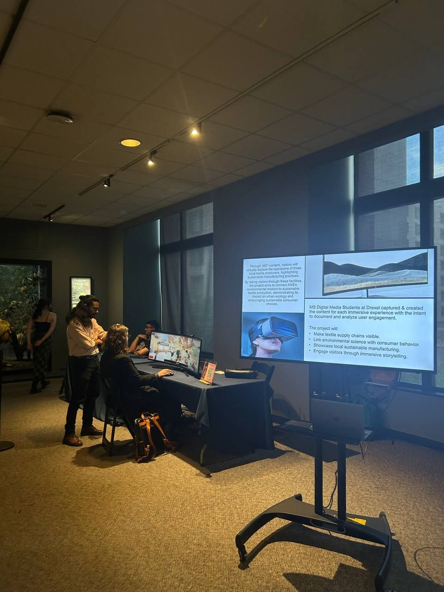
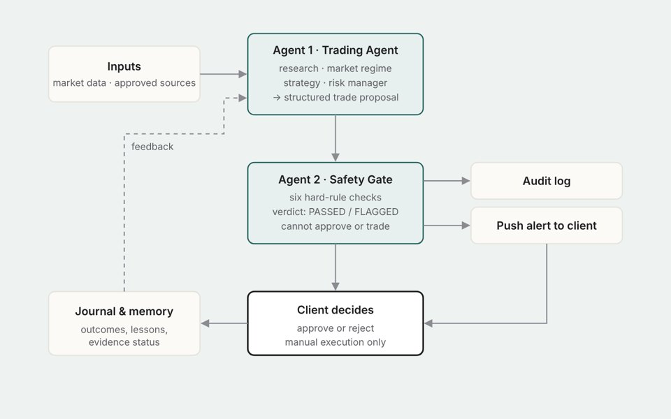
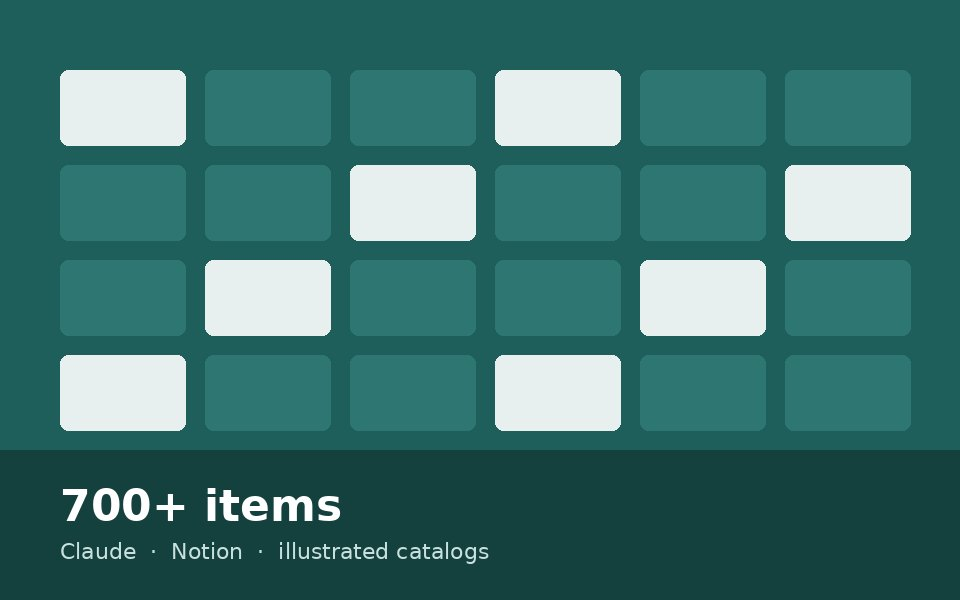

Projects
Projects
Research, design practice and applied AI.
Research
Studies with people: interviews, surveys, testing and co-design.

Multilingual AI assistant for university portals
How international students experience an academic portal, and D.A.V.E., a culturally adaptive AI assistant.

Supporting parents in childcare
Interviews with parents about non-emergency care, leading to services that connect families with nurses.

Fashion technology VR initiative
Visitor research on an immersive VR experience about sustainable textiles.
Design practice
Wearables, interactive sensing and heritage-based design.

AI-Brooch
A speculative assistive wearable that could sense its wearer and speak for people with speech disabilities.

TIME
A 360° journey through the homes I have lived in, navigated by turning your head. TouchDesigner.

INTERACT
A century of images of Iranian women that moves at the speed of the viewer’s body. TouchDesigner.

Orosi: from historic windows to modern lighting
Field research on Qajar-era sash windows, translated into a handmade wooden light.
Applied AI
AI systems built for real clients, with people kept in control.

Human-in-the-loop AI agents for trading decisions
Two agents propose and check trades against six hard rules; the client makes every final call.

Inventory automation and digital archive
A 700+ item rug inventory digitized with Claude and Notion, with auto-generated illustrated catalogs.